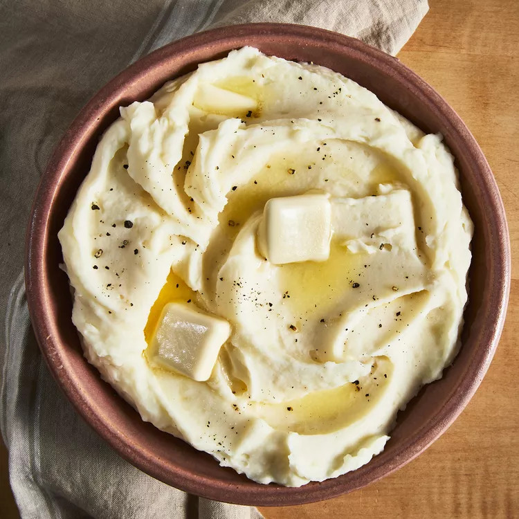

Mashed Potatoes Recipe

Description
With a total time of 35 minutes to make 4 servings. You'll find the full, step-by-step recipe below — but here's a brief overview of what you can expect when you make these mashed potatoes: Add the potatoes and garlic to a large pot of salted, boiling water. Reduce the heat and simmer until the potatoes are tender. Heat the milk and butter in a saucepan until the butter is melted. Drain the potatoes, then return them to the pot. Slowly add the warm milk mixture, mashing with a potato masher or blending with a mixer until the potatoes are smooth and creamy. Season to taste.
Ingredients
- 2 pounds baking potatoes, peeled and quartered
- 3 cloves of garlic, peeled, or to taste (Optional)
- 1 cup milk
- 2 tablespoons butter
- salt and ground black pepper to taste
Steps
- Gather all ingredients
- Bring a large pot of salted water to a boil. Add potatoes and garlic, lower heat to medium, and simmer until potatoes are tender, 15 to 20 minutes.
- When the potatoes are almost finished, heat milk and butter in a small saucepan over low heat until butter is melted.
- Drain potatoes and return to the pot. Slowly add warm milk mixture, blending it in with a potato masher or electric mixer until potatoes are smooth and creamy.
- Season with salt and pepper. Serve and enjoy!